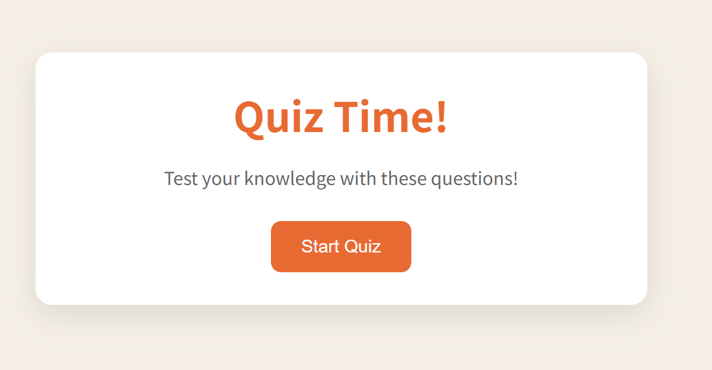
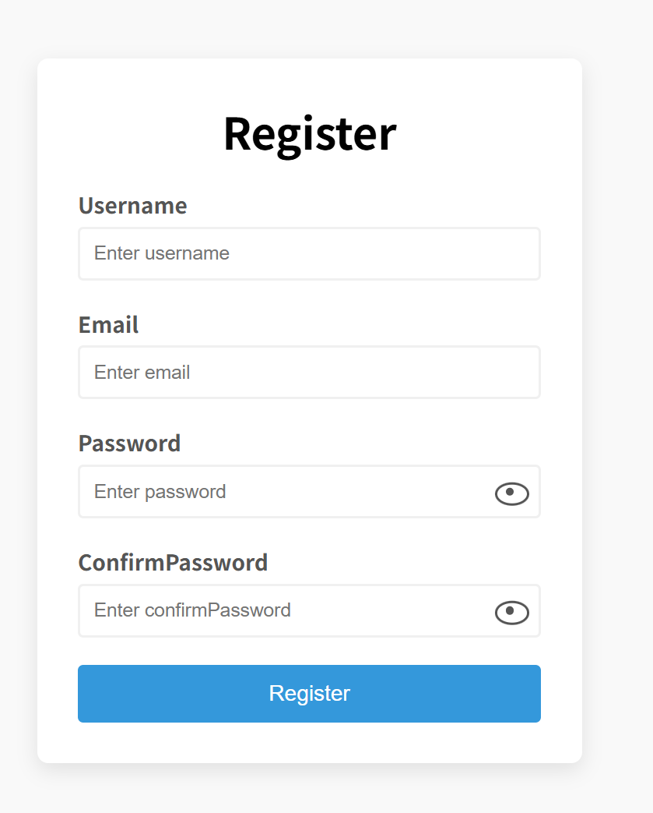
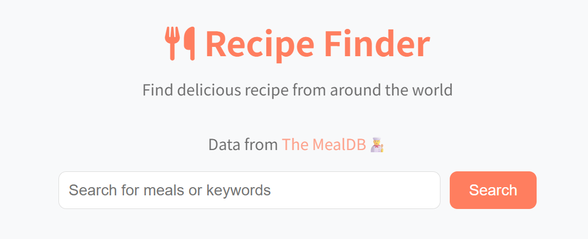

1 Quiz Time
交互测验页面，计时作答并即时反馈结果
Quiz
这是我的前端网页作品，点击卡片即可跳转到对应页面，快速浏览每一次练习与上线项目
无需登录，点击即可打开项目
No meals found. Try another search term!
从测验、表单到食谱检索，三份独立作品都已上线，点进卡片即可体验

交互测验页面，计时作答并即时反馈结果

注册表单校验与状态反馈，覆盖输入与提交流程

按关键词检索食谱，查看详情、配料与制作步骤
四个步骤走完整站：从浏览作品到打开线上页面
在作品区浏览卡片，预览封面、标题与类型标签
点选感兴趣的项目，卡片会轻微抬起并给出交互反馈
在新标签页打开已部署的线上地址，不影响当前作品集
在真实页面里体验交互、布局与功能是否达到预期